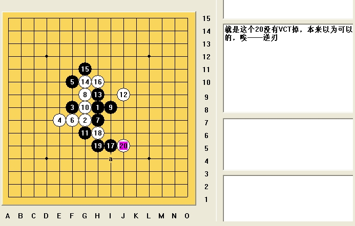
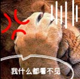
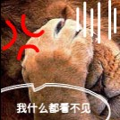

首页
五子棋交流
恩，可以预见，我再细拆下
这条线路也挺有前途的
这个14唯一 后面没完全地毯
地毯了 11111
［ 岳麓小棋后 于 2009-5-17 11:52:44 时花20金币送鲜花一朵］
［ 潇洒 于 2009-5-17 13:30:33 时花20金币送鲜花一朵］
［ 茗弈小刀 于 2009-5-17 12:10:50 时奖励此帖[金币加 20 威望加1］
我帮你地毯吧，算是对我那局话的补偿。

［ 岳麓小棋后 于 2009-5-17 12:10:54 时花20金币送鲜花一朵］
［ 茗弈小刀 于 2009-5-17 12:13:40 时奖励此帖[金币加 20 威望加1］
500k内 也行
你要什么样的把视频截取过来传我mdlfree@126.com 或者把视频地址和时间段发给我
这个怎么杀
这路通明星杀法，没盘端问题的，不过这个也算比较难杀的一个点吧
那有5个必胜点了
［ 失落刀 于 2009-5-17 20:55:00 时花20金币送鲜花一朵］


 不会吧
不会吧
 
